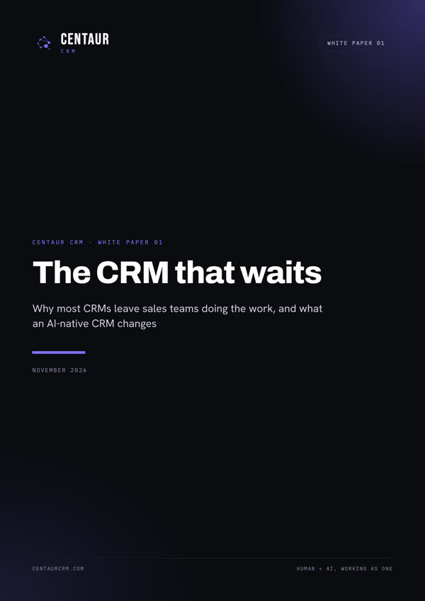

White paper 01
The CRM that waits
Why most CRMs leave sales teams doing the work, and what an AI-native CRM changes.
Most sales teams don’t have a CRM problem. They have a typing problem. This paper sets out the four things traditional CRMs, including their new AI features, still leave with the sales team: inbound inquiries that wait too long, deal records that depend on reps typing them up, AI that is bolted on and metered, and value that only arrives after a project.
It then describes a different model, a CRM built around AI agents that do the work under rules the team sets, with a worked example and six questions to ask any CRM vendor.